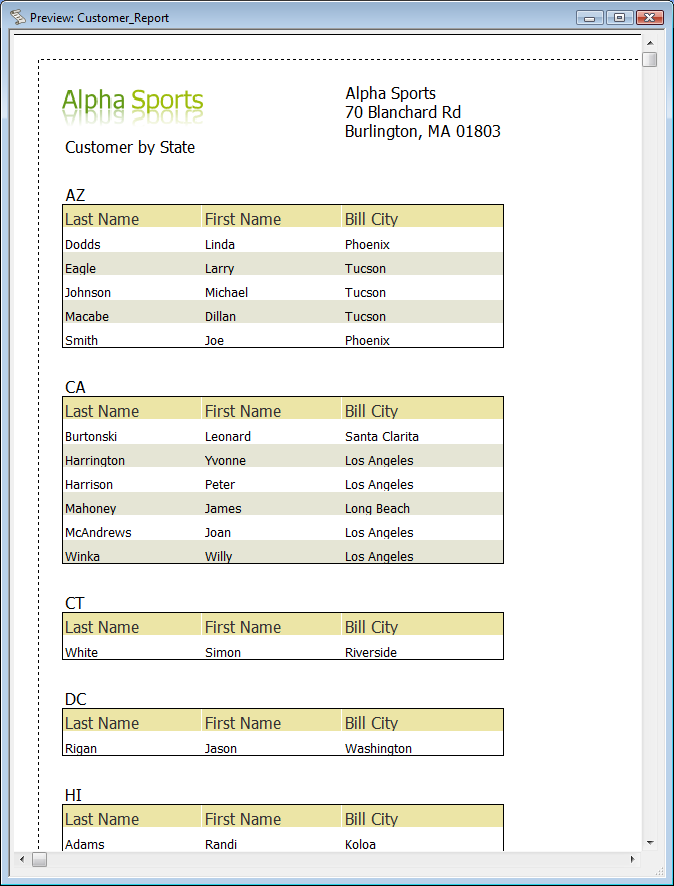

Layout Table Report Example: Customer List
In this example we will create a layout table report in the AlphaSports database that lists customers by state. It is loosely modeled on the Customer List Free Form report sample supplied in the AlphaSports database.There's one attribute of the Customer List sample that we can not emulate with a layout table report: it has two columns, and layout table reports don't have that capability. However, the Free Form report goes through the Amyuni driver to render for all formats, and does not render faithfully in Excel.
Start by opening the AlphaSports database, exiting from the initial form, and opening the Reports tab of the Control Panel. Click on New, pick the customer table, make sure the method is Use Quick Report, and press OK.
In the Columns pane, pick lastname, firstname, and bill_city.
In the Groups pane, pick bill_state_region. Shorten the label to State.
In the Settings pane, make sure you've picked Columns for the Detail Fields. Check any boxes that are unchecked.
In the Filter and order settings pane, bring up the order builder, and select lastname, firstname, and bill_city.
In the Styles pane, pick Section Borders, Color alternating rows, and Tan.

Preview the report, then save it as Customer_ReportQ.

This is as far as we can go with the Quick Report Genie, but let's not lose the capability to go back to it. Save it again as Customer_Report. Now click Open in Report Editor, select 'Layout Table' report, and click Save Report and Open in Report Editor.
In the report editor, add a new row in the top band, using the Layout Table toolbar or cell menu. In the right-hand column of the top band, merge the top and bottom cells, again using the Layout Table toolbar or cell menu. Drag the topmost vertical tab marker down, and insert the Alpha Sports logo image from the AlphaSports database in the top left cell using the cell contents editor. The editor is brought up by double-clicking in the cell, and the image selector can find the logo. Edit the second row left-hand cell to say Customer by State. Enter the Alpha Sports address in the double-high top right cell. Your design should now look roughly like this:
Now save and preview the report. Adjust the design as desired or until the preview looks roughly like this:

When you're satisfied, save the design again. Now preview once more and save the report in all five possible formats: Adobe Acrobat PDF, Dynamic HTML, Rich Text, Plain Text, and Excel. Each time you save, pay attention to the report processing time, and view the report in the default viewer. Notice that the HTML and Excel reports do not use the Amyuni driver, and render very quickly compared to the free form customer list sample.
For extra credit, change the address block from plain text to HTML and style it to roughly match the address block of the Customer List sample.